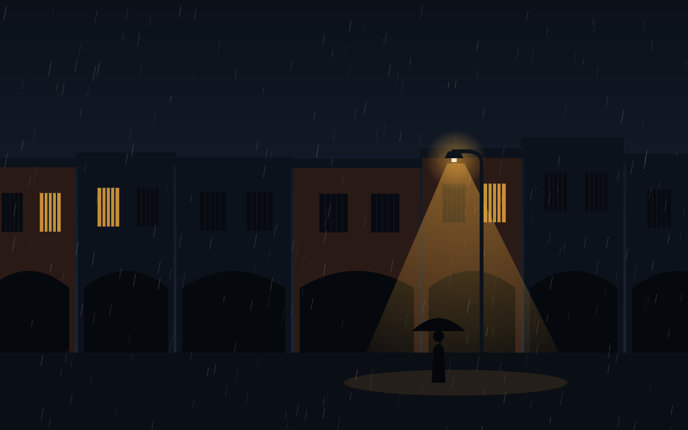
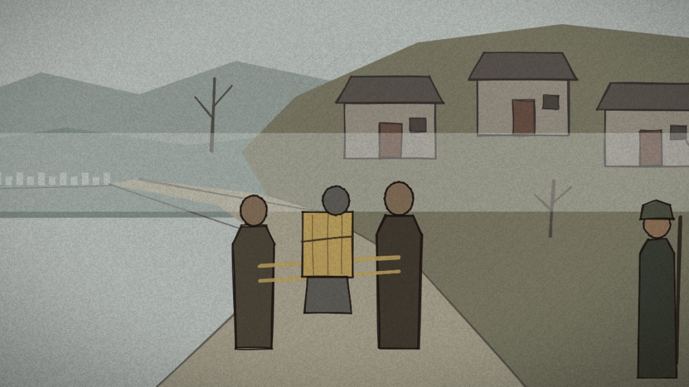
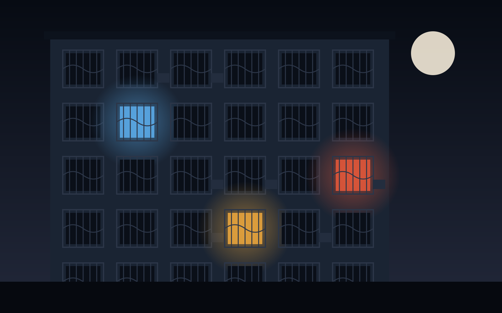

WAKE-002
已上線點擊背後的藏鏡人
MEDIA LITERACY GAME
扮演假訊息操盤手，從操弄者的視角理解資訊戰——看懂套路，才有免疫力。
立即遊玩 →檔號 00 — 天亮之前
WAKE 是張凱翔的獨立工作室。敘事遊戲、互動體驗與 3D 視覺——整條管線，同一雙手。
用機制承載記憶，讓玩家活在那個時代的邏輯裡。
媒體識讀、財商、國防——把做決定的位置交給玩家。
產品動畫、爆炸圖，以及依史料考據重建的場景。
網頁產品、SaaS 與量化系統，從 0 到 1。
檔號 01 — 作品
往下捲動，翻過三扇門。


